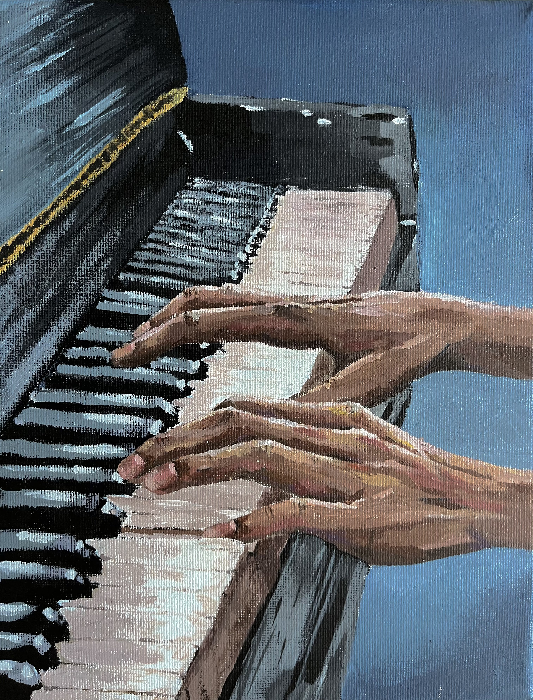
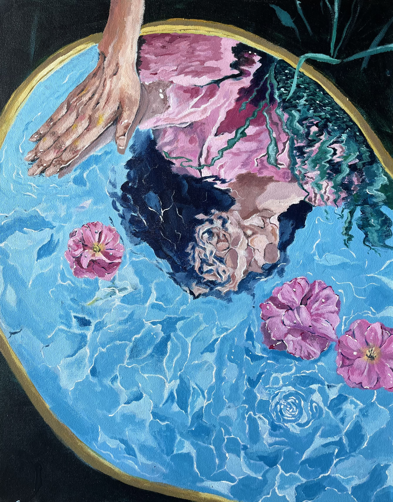
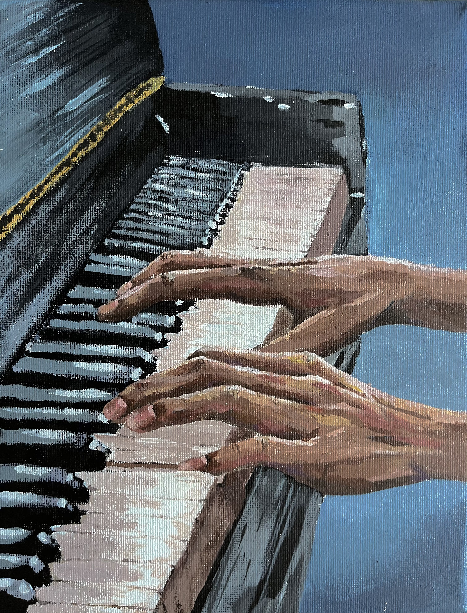
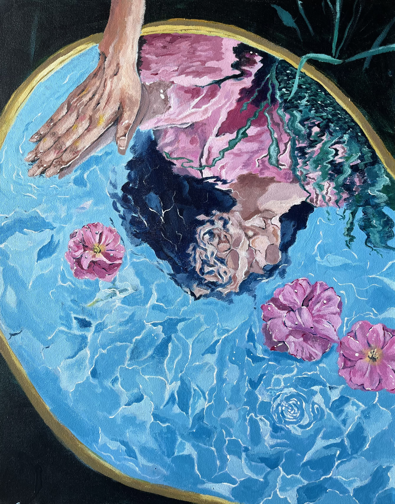
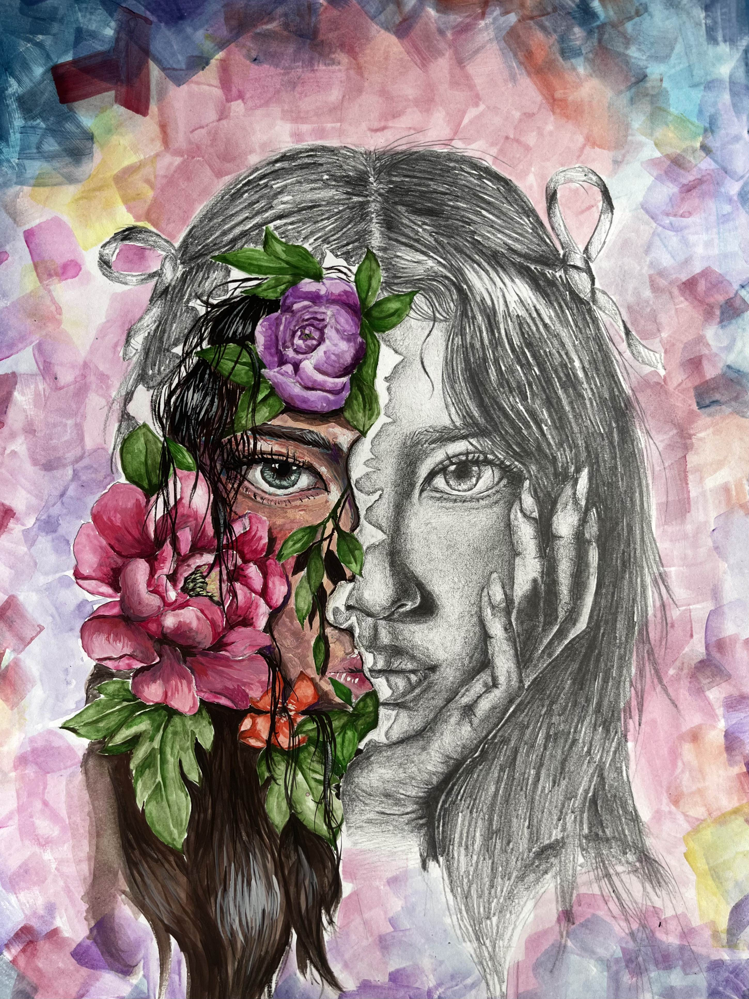
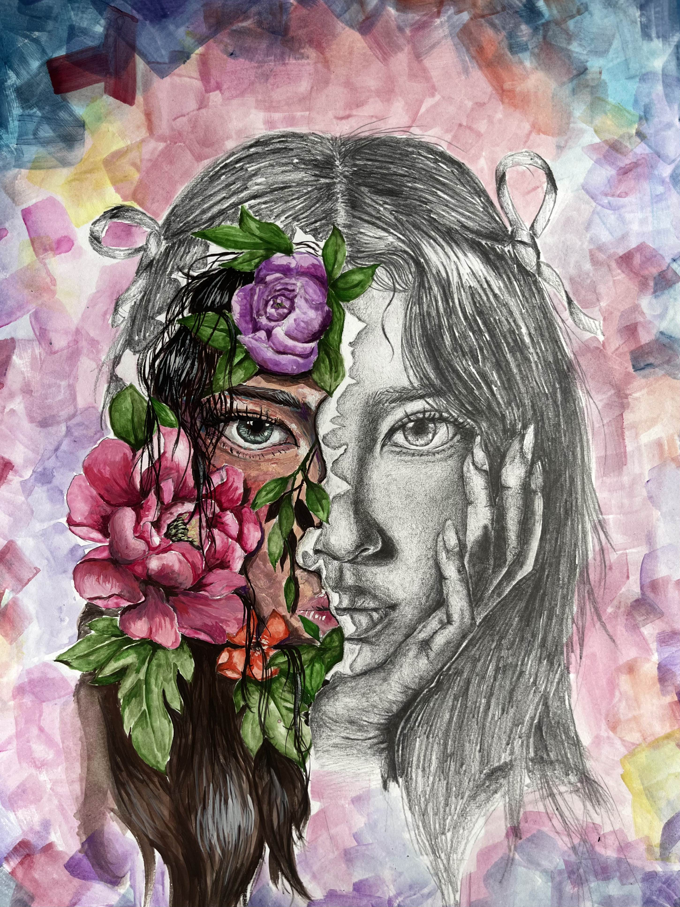
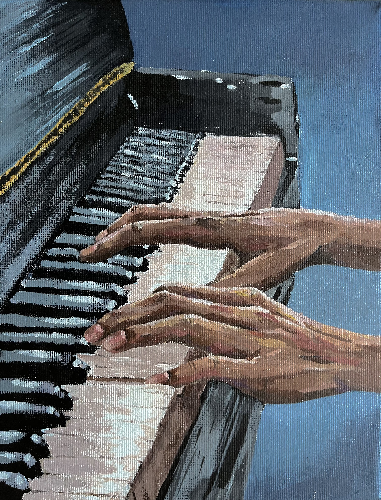
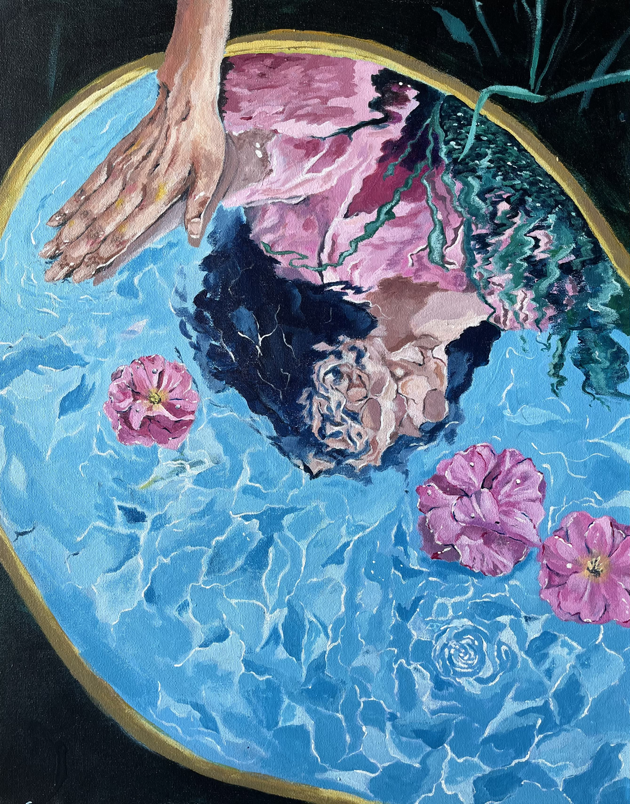
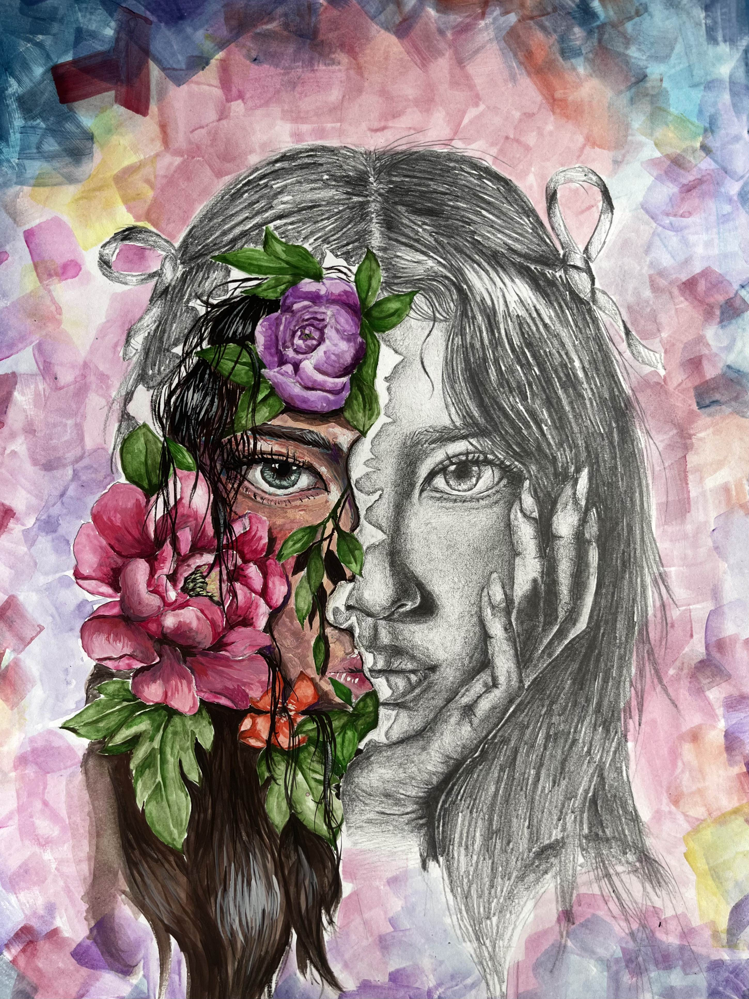

×
 



 

Some art I've created!



Vivian is a first year Computational Media student who is passionate about art and computer science. In high school, she founded a Girls Who Code chapter where she taught middle and high schools how to code in Java. She also volunteers for her local art camp where she teaches elementary school kids drawing, painting, and basic art concepts like shading and perspective. In her free time, she likes to play piano, create art, and crochet.